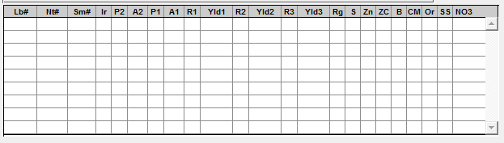

Enter "Farm & Field" sample info
Enter farm and field sample information for a new order.
Note: These instructions use Tab to navigate between
fields horizontally. You may also use Enter to enter info by
column for multiple samples.

- Press Ctrl + Tab for the number of samples you want to enter.
- Double-click to enter the first Lb# field of the top row. Enter the regular number for the first sample.
- In Nt#, enter the special number, if any.
- In Sm#, enter the 4-digit sample code, if any.
- In Ir, type "Y" if the samples have been irrigated. If not, skip this box.
- P2 repsents the crop from two years ago. Enter this code if provided.
- In the first A2 field, if the P2 crop was alfalfa, enter the first number of the range selected on the form. If not, leave it blank.
- P1 represents the crop from the previous year. Enter this code if provided. Fill out the following A2 field if appropriate.
- R1 represents the first crop recommendation. Enter the crop code. If the client did not select any crops, use crop code "62" (other).
- Enter the corresponding expected yield in Yld1, or leave the field blank.
- Enter R2, Yld2, R3, and Yld3 if provided. If not, leave the fields blank.
- Type "Y" in the appropriate following fields to select specific tests for the sample. Reference the Farm & Field test list.
- Enter information for any additional samples using the steps above. Ensure any extra rows are deleted via the drop down menu (.
- Once all of the samples are entered, click the Accept button on the upper right-hand corner of the window.